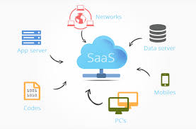

Full-stack product · Financial data
A clearer view of the
stock market.
A microservices application bringing real-time market data, company news, and financial metrics into one approachable Vue.js experience.

01 / The idea
Bring the signals together.
Understanding a stock often means switching between price data, company news, and financial metrics. This project explored a single experience that brings those different signals together.
The application was designed as a full-stack product, not just a visualisation: dedicated services handled identity and external data behind a responsive frontend.
02 / Under the hood
Small services, clear responsibilities.
Three Ruby on Rails services separated authentication, real-time stock data, and company news with financial metrics. REST APIs connected these capabilities to the Vue.js client, while CockroachDB provided persistence.
A builder-style approach structured backend construction, and third-party APIs supplied the market and company information presented by the application.
03 / Delivery
The pipeline is part of the product.
GitHub Actions supported trunk-based continuous integration and deployment. A push to the main branch could build and deploy the application to Google App Engine, with sensitive configuration stored in encrypted CI secrets rather than source code.
The result joined application architecture with repeatable delivery—an early expression of the end-to-end engineering approach I continue to use.